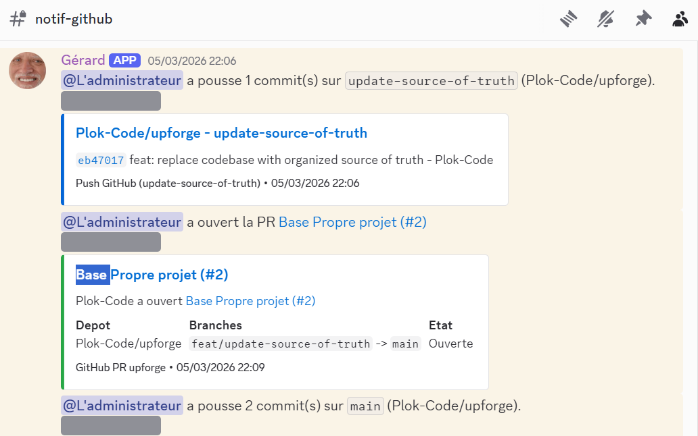
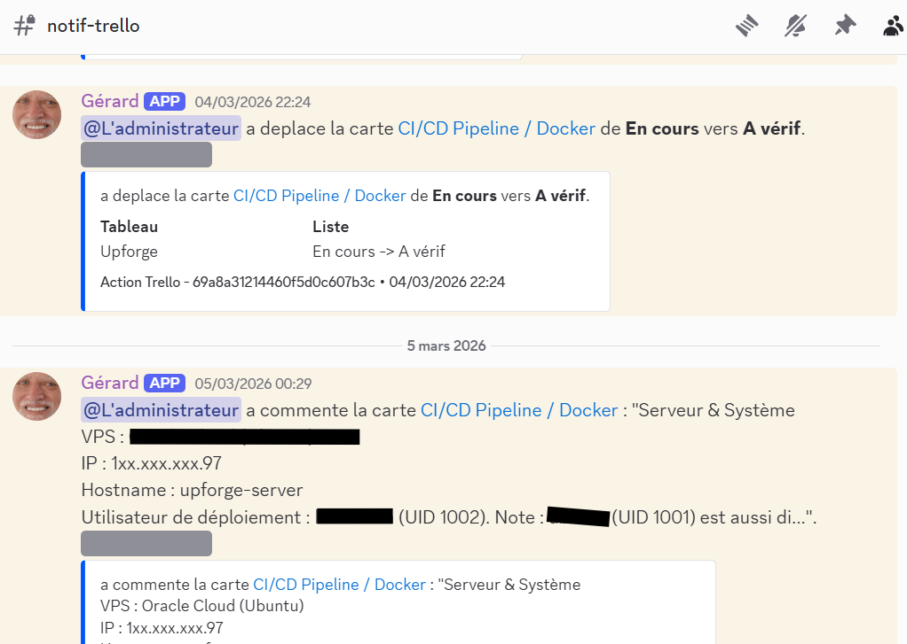

Projet
G-rard - Trello, Drive et GitHub vers Discord
Objectif : centraliser dans Discord les evenements utiles d'un projet pour reduire l'inertie collective, limiter les conflits de taches et donner a toute l'equipe le meme niveau d'information sans obliger chacun a surveiller Trello, Drive et GitHub en permanence.
G-rard transforme des evenements disperses en un flux de coordination unique dans Discord, pour que l'equipe garde une lecture immediate de ce qui bouge vraiment dans le projet.
Constat de depart
Dans mes projets en equipe, j'ai souvent retrouve le meme empilement d'outils : Trello pour organiser, Discord pour communiquer, Google Drive ou Nextcloud pour partager, GitHub pour produire. Le probleme n'est pas que ces outils soient mauvais. Le probleme, c'est que l'information se disperse entre eux.
Quand quelqu'un deplace une carte, modifie un document, ouvre une pull request ou pousse un commit, le reste de l'equipe ne le voit pas toujours au bon moment. Cette latence ralentit les process, cree des conflits de taches, augmente les malentendus et finit par couter de l'energie au projet.
Intuition produit
Dans beaucoup d'equipes, Discord joue deja le role de salle de pause, salle de reunion et bureaux en meme temps. Je suis donc parti d'une idee simple : si c'est deja l'espace central de l'equipe, alors c'est la que les evenements importants du projet doivent remonter.
J'ai pense G-rard comme un systeme de haut-parleurs numeriques. Des annonces immediates, consultables quand chacun le souhaite, qui rendent visible qui a fait quoi sans obliger tout le monde a surveiller chaque plateforme separement.
Apercu du produit



Comment G-rard fonctionne
G-rard est un bot Node.js qui relie Trello, Google Drive et GitHub a Discord. Le service recupere les evenements, verifie leur origine, filtre ceux qui sont vraiment utiles, les reformule dans un format clair puis les publie dans les bons salons.
Architecture globale
- Trello et GitHub poussent leurs evenements vers des routes Express securisees par signature, afin de verifier que le message provient bien de la bonne source.
- Google Drive est suivi par polling incremental via l'API Google, avec gestion d'un etat persistant pour eviter les relectures inutiles et le spam.
- Chaque integration peut avoir son propre salon Discord, son propre role a notifier et ses propres regles de filtrage.
- Un annuaire d'identites relie les profils Trello, Drive et GitHub aux comptes Discord pour afficher le bon pseudo et, si besoin, mentionner directement la bonne personne.
Impact sur l'equipe
L'apport de G-rard n'est pas seulement de notifier. Il reduit le temps mort entre une action et sa prise de conscience collective. Une information importante ne reste plus enfouie dans un outil secondaire : elle rejoint directement l'espace ou l'equipe se parle deja.
Le resultat recherche est tres concret : moins d'inertie, moins d'oublis, moins de collisions de travail, et une meilleure lisibilite de l'activite du projet sans imposer une surveillance permanente a chaque membre de l'equipe.
Open source par logique de produit
J'ai choisi de rendre le projet open source parce que ce besoin depasse largement un seul contexte. Beaucoup d'equipes ont besoin de mieux centraliser leur communication operationnelle. Le depot permet donc de reprendre l'outil, l'auditer, l'adapter et le deployer selon sa propre organisation.